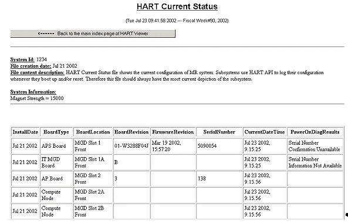

Table 1: HART Log Field Definitions
| FIELD | DEFINITION |
| Install Date (InstallDate) | The first time a board is installed and a TPS reset occurs, the date is stored in this field. |
| Board Type (BoardType) | Board name or acronym |
| Board Location (BoardLocation) | Board slot number. Note that daughter boards have the same slot number, but a letter designation. |
| Board Revision (BoardRevision) | The revision of the board |
| Firmware Revision (FirmwareRevision) | The firmware revision, if any |
| Serial Number (SerialNumber) | The unique serial number given by the ID chip. This number does NOT match the bar code serial number on the board. |
| Current Date / Time (CurrentDateTime) | The date and time you access the HART Log program |
| Power On Diag Results (PowerOnDiagResults) | Whether or not the program was successful in reading the serial number of the board. |
| NOTE: | If a board does not have information available via the ID chip, one or more of the fields may be empty. |
Illustration 3 shows an example of a HART Current Status log.
Illustration 3: Partial HART Example Current Status Output
